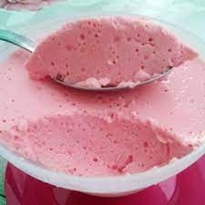

Voltar para o índice
Musse de gelatina

Ingredientes
- 1 lata de leite condensado
- 2 xícaras (chá) de água quente
- 1 xícara de leite
- 2 pacotes de gelatina em pó com sabor
Modo de preparo
- Bater todos os ingredientes no liquidificador por 3 minutos.
- Levar para gelar antes de servir.
Observação:
Receita originalmente zero açúcar, utilizando leite condensado e chocolate em
pó zero açúcar.